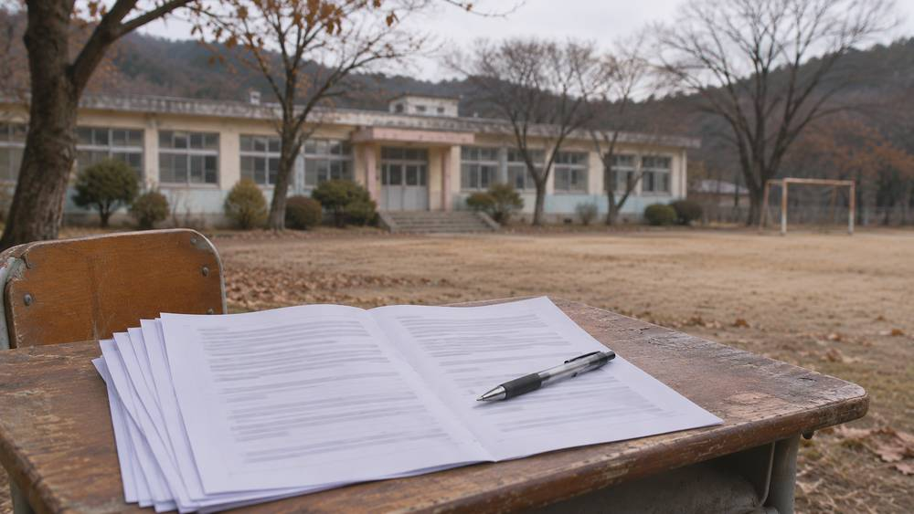

지방정부에 조례 본보기 10개…폐교 대부료 낮춘 제주, 활용률 71.4%로 올라

법제처, 노인 방문판매 피해·저장강박·식품사막화·주차공유 등 조문까지 제공 / 지방의원·법제 담당자 교육으로 반영 지원
법제처는 지방정부가 조례를 만들거나 고칠 때 바로 활용할 수 있는 자치법규 입법모델안 10개를 마련해 지방정부에 제공했다고 11월 18일 밝혔다. 올해는 지역 문제를 푼 우수 조례의 효과와, 자치입법권을 넓히려 법령을 고친 뒤 개정된 조례의 성과를 함께 분석했다. 모델안에는 주요 조문까지 붙었다.
첫 번째 묶음은 지역 문제 해결형 조례 5개다. 노인 소비자 방문판매 피해 예방 조례 모델은 그 지역에 사는 노인을 '방문판매 지킴이'로 위촉해 홍보·상담·신고 안내를 맡기도록 했다. 저장강박 의심가구 지원 조례는 이미 105개 기초지방정부에 있는데, 법제처는 한 번 집을 치우는 데 그치면 재발을 막기 어렵다며 방문점검·전화상담 같은 사후관리를 모델에 넣었다. 디지털 저장매체 파기 서비스 조례를 둔 한 지방정부에서는 제정 뒤 신청 건수가 한 해 전의 14배로 늘었고, 모델안은 신청인이 원하면 파기 과정을 참관하고 파기확인서를 받을 수 있게 했다. 식품사막화 해소, 주차공유 활성화 조례도 이 묶음에 들었다.
두 번째 묶음은 법령 정비로 조례에 맡겨진 사항을 다룬 5개다. 법률 개정으로 공립수목원 입장료를 조례로 정하게 된 뒤 무료로 바꾼 곳은 평일 하루 평균 입장객이 13%, 전체 입장객이 4.4% 늘었다. 제주특별자치도교육청은 2025년 10월 조례로 폐교재산 수의계약 대부료율을 1%에서 0.5%로 낮췄고, 2026년 폐교 처리 활용률은 71.4%로 한 해 전보다 5.7% 늘었다. 장기방치 건축물 정비기금, 보건소 추가 설치 협의 주체 변경, 농업기계 임대사업단 지원 모델도 함께 나왔다.
법제처는 모델안이 실제 조례에 반영되도록 지방의회 의원과 법제업무 담당자에게 홍보와 교육을 이어 가겠다고 했다. 내년에는 인공지능으로 주민 관심 분야를 골라 관련 조례를 분석할 계획이라고 밝혔지만, 구체적인 일정은 보도자료에 나오지 않았다.
뉴스 바로 읽기
본지가 공개 자료와 본지 보도로 확인한 사실만 덧붙입니다
10개 모델의 주요 조문은 정책브리핑(korea.kr) 보도자료 붙임에서 볼 수 있다. 폐교재산 대부료율 모델은 「폐교재산의 활용촉진을 위한 특별법 시행령」 정비로 대부료율 하한과 감액비율 상한이 없어진 데 따른 것이다. 보도자료에는 제주특별자치도교육청 말고 어느 지방정부의 조례를 분석했는지는 나오지 않았다.
출처: 법제처 2026-11-18 보도자료 「지역사회 문제 해결에 도움되는 자치법규 제정ㆍ개정, 법제처가 도와드립니다!」(자치법제지원과, 참고 '참고 입법모델안 주요 조문') 원문 보기